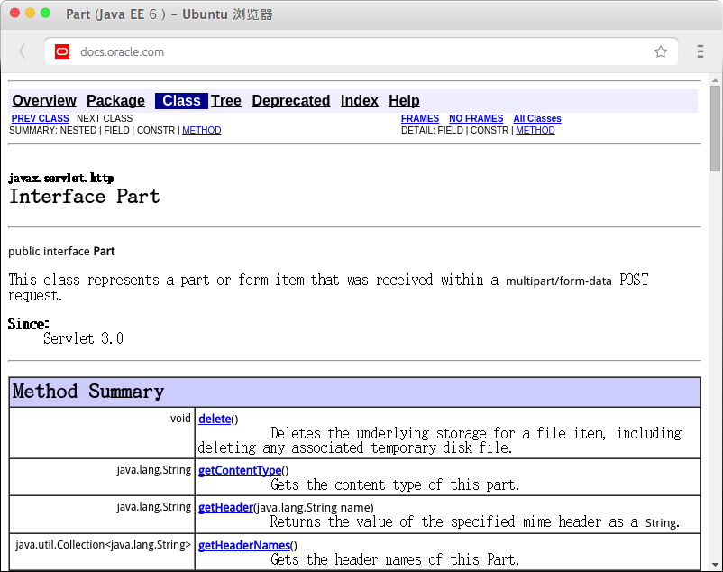
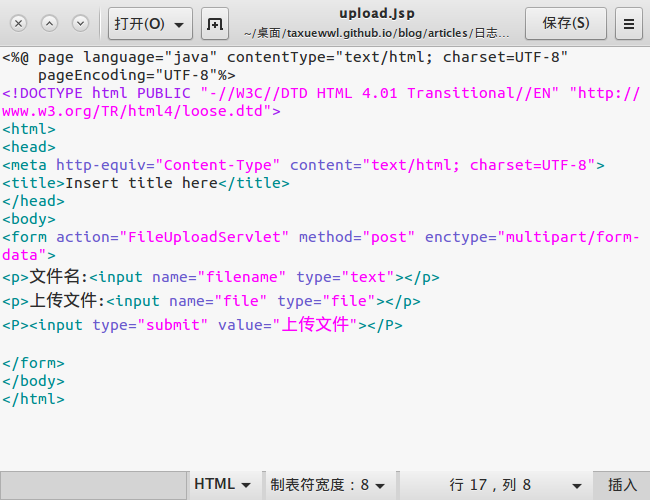
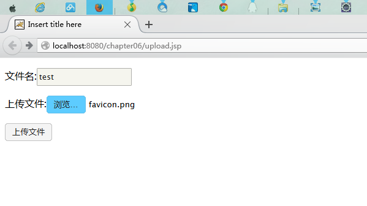
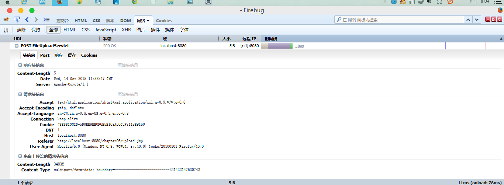
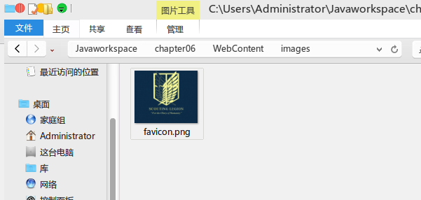

之前曾做过使用第三方ｊａｒ包上传文件的实验，便想使用原生方法进行实验，但是使用io包的过程中尝试失败．今天的ＷＥＢ课上任老师展示了servlet3.0上传文件的方式，即使用mutipart/form-data以及part类进行文件的上传．

根据JavaEE文档可知，该类通过post方法获得一个multipart/form-data类型的实例，因此完全适合此处的文件上传．
首先看代码
package app.snowalker.fileupload;
import java.io.IOException;
import javax.servlet.ServletException;
import javax.servlet.annotation.MultipartConfig;
import javax.servlet.annotation.WebServlet;
import javax.servlet.http.HttpServlet;
import javax.servlet.http.HttpServletRequest;
import javax.servlet.http.HttpServletResponse;
import javax.servlet.http.Part;@WebServlet(“/FileUploadServlet”)
@MultipartConfig
public class FileUploadServlet extends HttpServlet {
private static final long serialVersionUID = 1L;public FileUploadServlet() {
super();
}
protected void doGet(HttpServletRequest request, HttpServletResponse response) throws ServletException, IOException {
this.doPost(request, response);
}protected void doPost(HttpServletRequest request, HttpServletResponse response) throws ServletException, IOException {
request.setCharacterEncoding("UTF-8"); Part part = request.getPart("file"); String file = part.getSubmittedFileName(); part.write(getServletContext().getRealPath("/images/") + file); String filename1 = request.getParameter("filename"); response.getWriter().println(filename1); }}
注意到注解位置为
@WebServlet(“/FileUploadServlet”)
@MultipartConfig
第一个不解释了，大家都明白，这个是3.0区别于2.x的地方．添加了注解将极大地简化开发流程．
第二个注解为@MultipartConfig，为Servlet中文件上传参数的获取问题提供来很好都支持．
Part part = request.getPart(“file”);
String file = part.getSubmittedFileName();
part.write(getServletContext().getRealPath(“/images/”) + file);
这段代码执行了文件上传的核心动作．它获取了提交的文件类型，字符串file获取了提交的文件名称，然后使用part对象将获取到的文件真实地址文件写入到servlet上下文中指定的具体位置．
)


打开开发者工具查看上传请求头，显示上传成功如图

打开目标文件夹进行验证，显示文件已上传．

本文介绍了servlet+jsp使用post方式上传文件的过程，为之后的动态站添加上传文件功能提供参考．当然也可以选择使用成熟的文件上传工具．
１０．